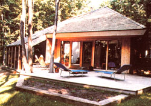
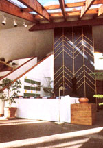
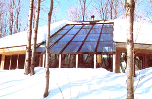
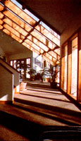
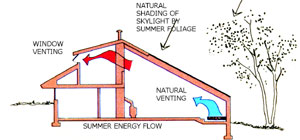
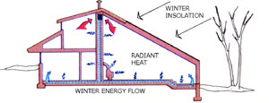

A Canadian Sunshine Showcase
November/December 1982
Orillia, Ontario design architect Peter Fluker used ol' Sol in style when he constructed . . .
As "alternative" sources of energy have become more widely accepted, passively heated and cooled houses have received plenty of attention, and for several good reasons: They're often elementary in design and function, generally require a minimum of maintenance, and depend very little (if at all!) on the more conventional energy sources.
And, partly as a result of the fact that a "sun powered" structure is its own heating and cooling "system", most passive dwellings represent a fine balance between cost effectiveness and the aesthetic appeal of building a home that complements its natural surroundings.
STRIVING FOR BALANCE WITH THE ENVIRONMENT
The Peter Fluker residence, located 90 miles north of Toronto in Canada's Ontario province, provides a fine example of the favorable blend of comfortable, attractive living space with energy efficiency. Because "only" two-thirds of the building's heating requirements are taken care of by the sun (in a climate that experiences 8,500 heating degree-days annually), it can't be considered completely solar self-sufficient, but then few naturally tempered homes are as yet . . . and this "shortcoming" is certainly compensated for by the outdoor-like atmosphere of the structure.
In planning his family home, you see, Fluker-a design architect by profession-strongly felt that the dwelling should embody the concept that people and their residences ought to be integral parts of, rather than intrusions into, the surrounding environment.
To accomplish this, Peter spent a good deal of time studying the local terrain and designing the building so that each feature represents a response to its surroundings. By taking advantage of the site's physical char acteristics, then, he was able to let the land do its share in making his home a functional success.
The house's several-acre lot is well isolated from the road by a generous stand of deciduous trees growing on a gentle southfacing slope. This foliage provides shading in the summer season, yet is developed enough to allow any breeze to reach the structure by passing beneath its umbrella of leaves.
The house itself stands at the peak of the slope and is bermed to the north. To further augment the effect of this earth sheltering, the designer shaped his home's cedar-shingled roof to direct winds away from the dwelling's south-facing skylight area. (The structure was laid out as a modified pentagon . . . both to encourage airflow and to make efficient use of its southern exposure.)
COMBINING BEAUTY AND FUNCTION
Fluker's design is intentionally uncomplicated: He planned a direct-gain, passive solar structure with 1,750 square feet of living area, all told. Over half the main floor is directly exposed to the sun . . . either through the 186 square feet of south-south-east-to south-southwest-oriented glass, or through the 360 square feet of skylight collector surface. The master bedroom on the upper level is bathed in light both indirectly (from white-painted ceilings and walls) and straightaway (through the roof section of the skylight).
On the other hand, the triple-glazed window area on the home's north, east, and west faces was kept to a total of only 70 square feet, and is responsible for less than 9% of the building's total heat loss.
In order to provide for energy absorption and storage-while adhering to the concept that the Structure should be a storage medium in itself-the designer incorporated several systems into his creation.
To begin with, the slab was poured over an insulated (R-16) bed, which includes an airhandling system. The surface of this concrete foundation was fitted out with dark, heatabsorbing slate in the solarium, hearth, and kitchen areas . . . but-because the owner felt that a softer material would provide a warmer, cozier feeling-carpeting was installed in most of the remaining living space.
Then, to take advantage of direct solar gain (and to provide a structural as well as an aesthetic focus), a concrete block column, veneered with slabs of charcoal-gray slate, reaches from floor to ceiling at the center of the house.
The pillar's function isn't simply to absorb heat. It also serves as a chimney for a Fisher woodstove, and houses a central duct that's connected to the air-handling network encased in the slab. By constantly using the low-speed fan in the backup electric furnace duct for cold-season circulation, Fluker was able to create a flow loop that pulls stagnant air from the peak of the building (where it gathers naturally) . . . into a vent at the top of the central column . . . and on through the concealed duct and into those in the system beneath the floor.
In this fashion, both the "conventional" backup and the solar heating systems are integrated, since any convective warmth from either the woodstove or the furnace must travel through the storage mass . . . and the Fisher's radiant heat is also absorbed directly by the masonry from the outside. Moreover, the warm-air distribution system reduces temperature differences between the high and low levels of the house, and-since the floor is constantly heated from beneath-the effects of any loss of direct solar gain that result from the use of carpeting are diminished to a significant degree. Finally, to insulate the structural package, Peter protected the walls and roof to a factor of R32.
Of course, the Canadian residence was also designed to passively fend off the effects of summer's higher temperatures . . . and this was done, for the most part, as naturally as possible. The greenhouse floor is vented to the exterior at ground level, and-because a lowpressure cell is created within the structure by prevailing wind flow over it-cool air from the forest bed is drawn into the house at that point and pulled upward . . . to eventually pass out of the structure through a row of clerestory windows high in the master bedroom's north wall.
Furthermore, although the huge skylight is somewhat protected from insolation by the surrounding summer foliage, this shading is not so pronounced during warm periods immediately before and after that sea son. So, to subdue the sun's rays through the spring and fall months, the designer may install a motorized shutter system on the ceiling beams. This should not only prevent unwanted sunlight from entering the house, but also greatly improve the structure's ability to retain warmth when the skylight is "closed off" at night.
A SHINING SUCCESS
Since completing his residence in 1979, Peter Fluker has spent a good deal of time analyzing the structure's strengths and weaknesses. And considering the harshness of the Canadian climate, he feels that his objective-the creation of a functional, attractive living space that taxes conventional energy sources as little as possible-has been successfully met.
Fluker's project has been a success when considered from a dollars-and- cents aspect, as well: His current heating requirements are 10 million BTU annually, which translates into a full-year expenditure of only $162 in U.S. funds. Building costs, on the other hand, figured to about $46 per square foot, which compares favorably with most dwellings constructed in the States at the time.
So, judging from this northern example, one can see that "going solar" is definitely progressive. After all, getting more from lessand doing it in style-is what it's all about!
EDITORS NOTE: The Peter Fluker Group is an Ontario-based organization involved in passive solar design and analysis/retrofit of existing structures. Those seriously interested in learning more about the services provided by the firm can contact Mr. Fluker at The Peter Ruker Group, Ltd., Dept. TMEN, P.O. Box 994, Orillia, Ontario, Canada L3V 6K8.
|
 |
 |
 |
 |
 |
 |
|
 |
|
|